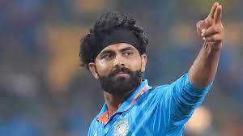

- Holds the record for the highest individual score in One Day Internationals (ODIs) with 264 runs against Sri Lanka.
- Multiple-time winner of the Indian Premier League (IPL) with the Mumbai Indians, both as a player and captain.
- First player to score three double centuries in ODIs.

- Fastest player to score 8,000, 9,000, 10,000, and 11,000 runs in ODIs.
- Consistently ranked as one of the world's top batsmen in international cricket.
- Holds numerous records for scoring centuries in successful run-chases.

- Consistent performances in all formats of cricket - Tests, ODIs, and T20s, contributing with both bat and ball.
- Known for his athleticism and exceptional fielding, capable of turning matches with his fielding skills.
- Achieved success in domestic and international cricket leagues, contributing significantly to the Indian cricket team's success.